Nuestras instalaciones
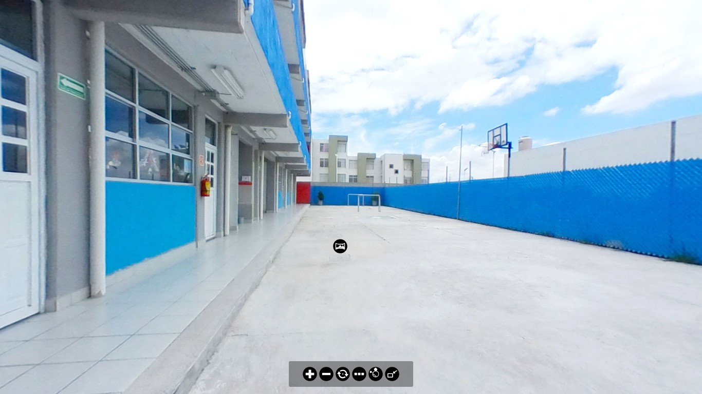
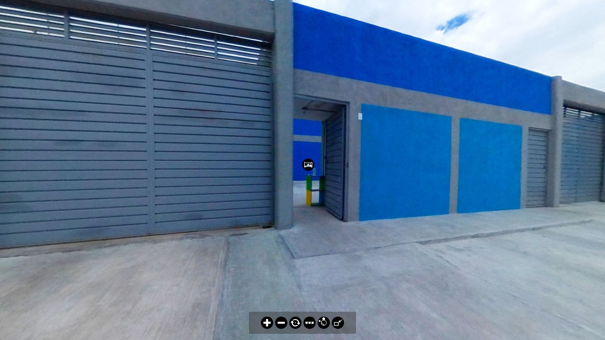
 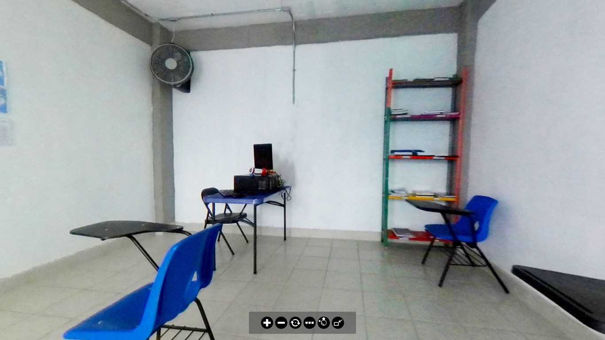
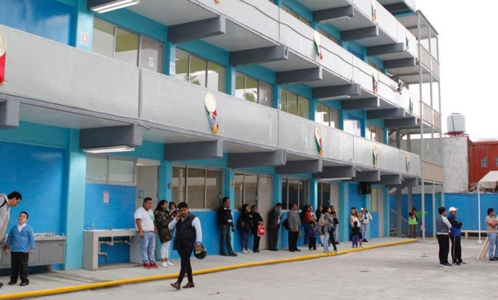
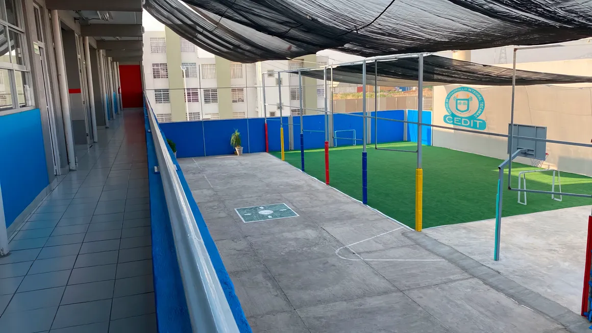
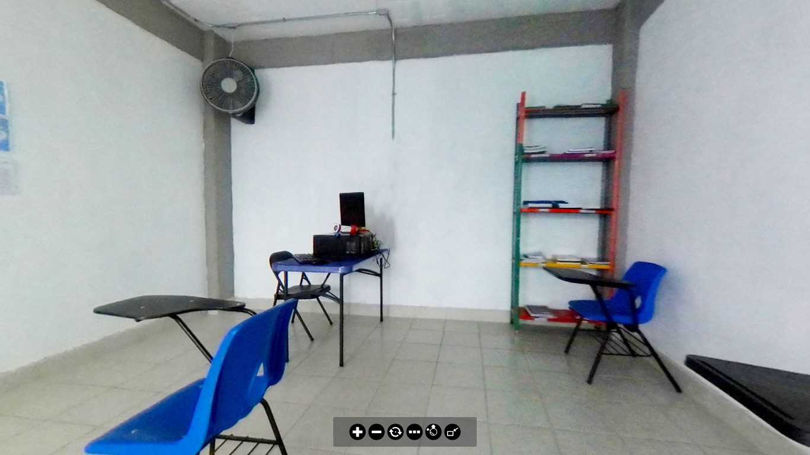
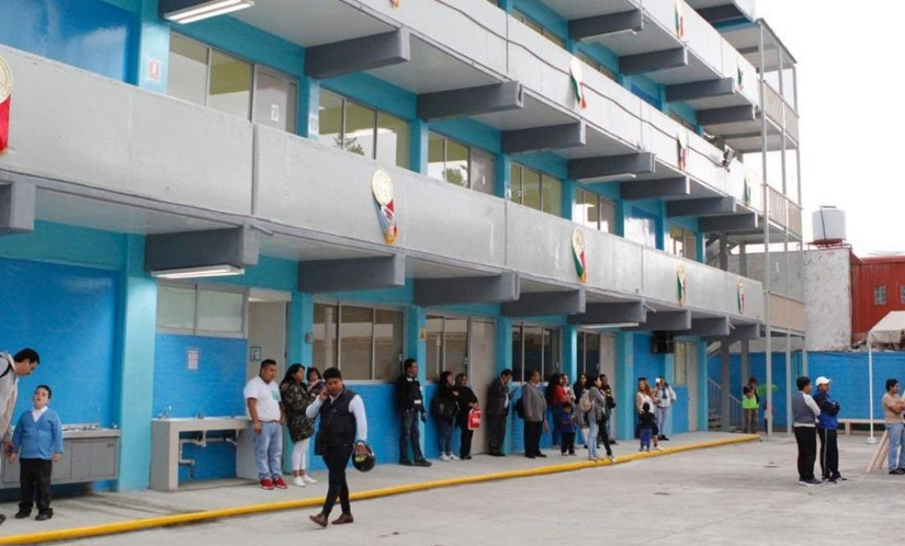
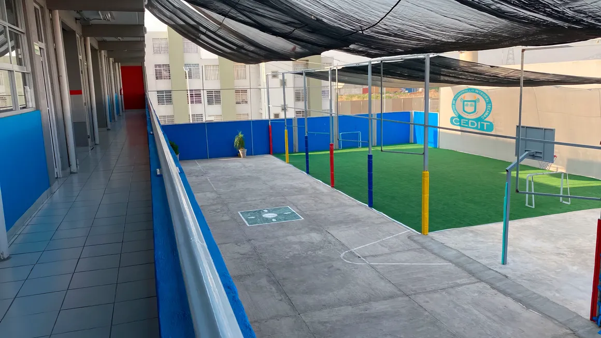
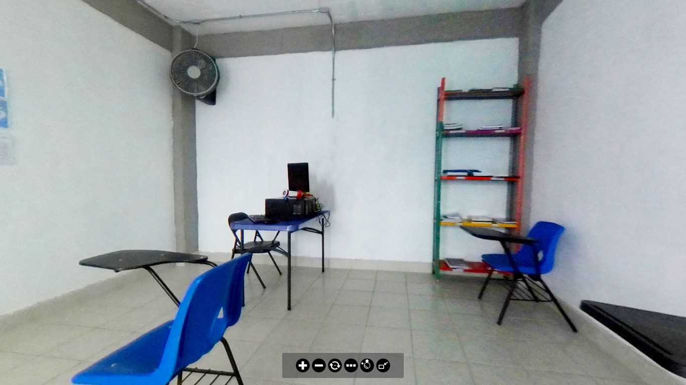
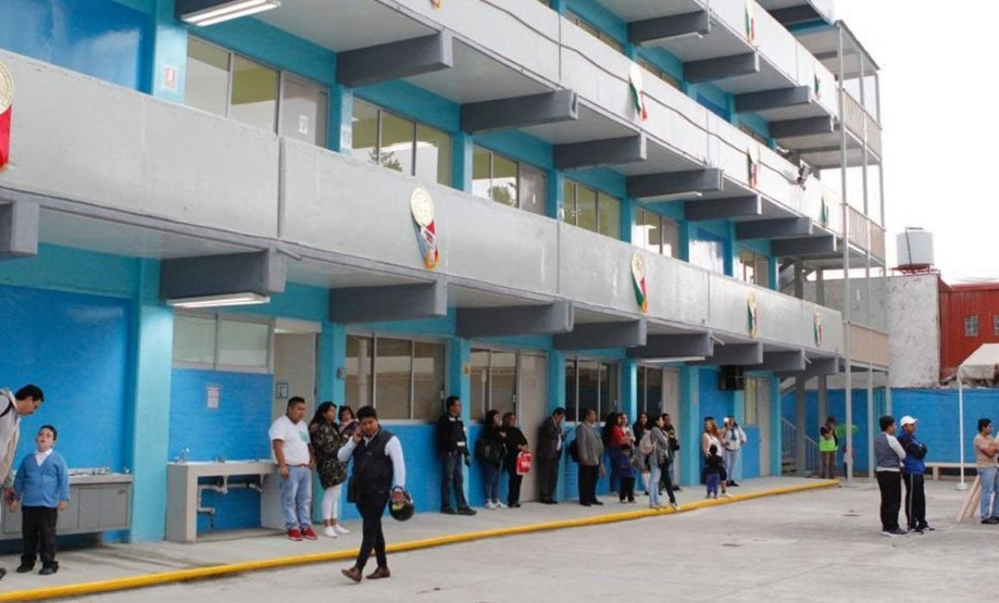
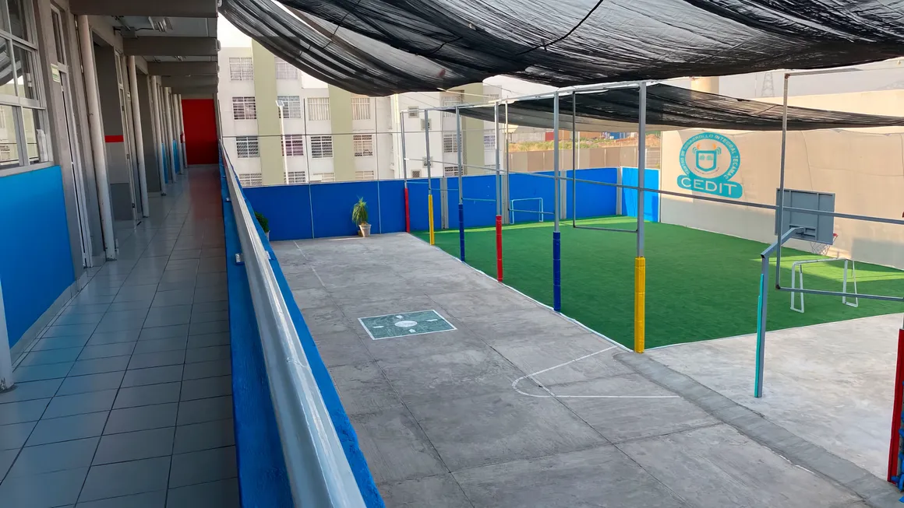
Contamos con un estacionamiento exterior amplio con capacidad para seis vehiculos de cuatro ruedas Un estacionamiento interno con capacidad para cuatro veiculos de cuatro ruedas Un salon de secretaria, direccion, sub direccion, enfermeria, comedor y salon de juntas Cuentan con diez salones (cinco en primer piso y cinco en segundo piso), cuatro baños (dos de niños y dos de niñas), un salon de computo, blibioteca y laboratorio Cuentan con una cancha de bassquetball pequeña, cancha de futbol pequeña con pasto sintetico y dos patios (patio de planta baja y patio de techo)